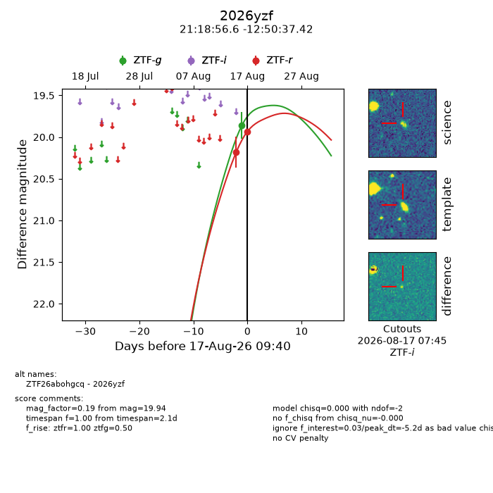
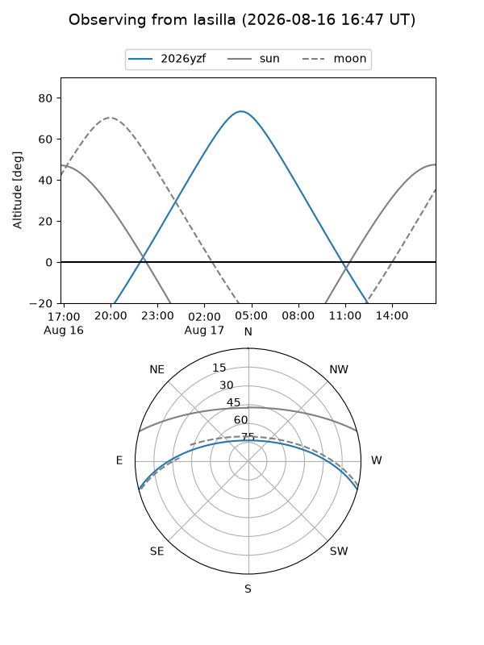
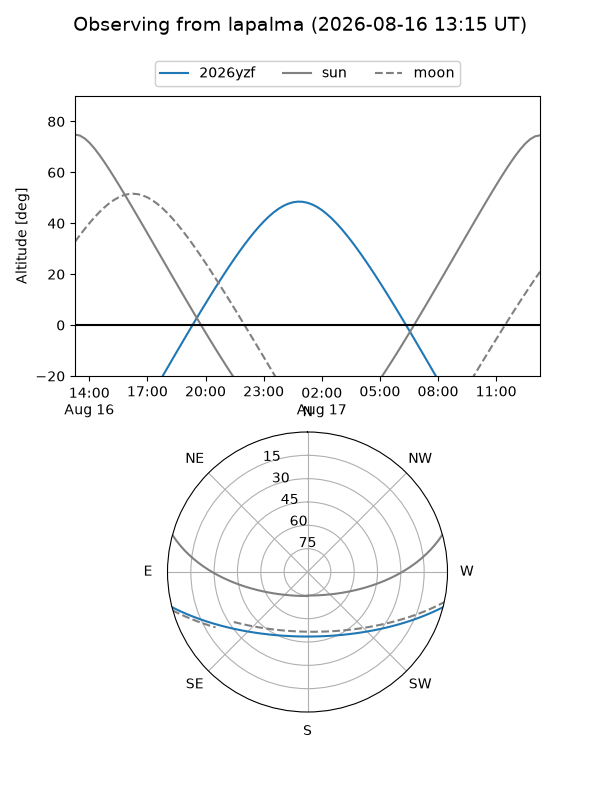
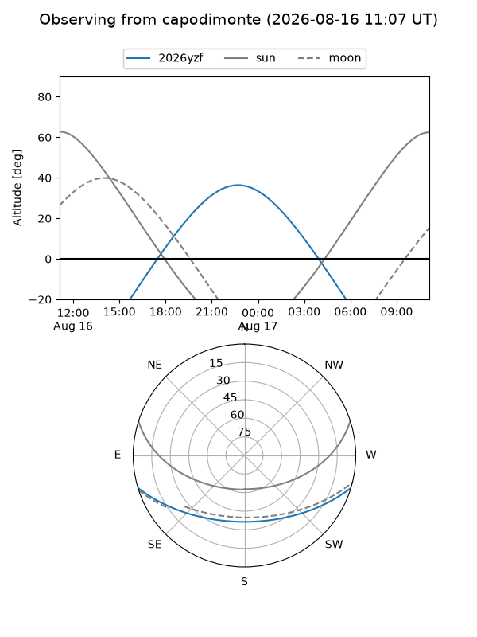
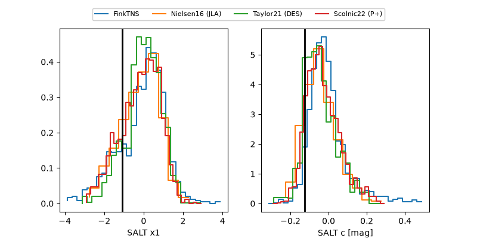

2026yzf
Target 2026yzf at 2026-08-17 09:44
Aliases and brokers:
FINK-ZTF: ztf.fink-portal.org/ZTF26abohgcq
Lasair-ZTF: lasair-ztf.lsst.ac.uk/objects/ZTF26abohgcq
ALeRCE-ZTF: alerce.online/object/ZTF26abohgcq
YSE-PZ: ziggy.ucolick.org/yse/transient_detail/2026yzf
TNS name: wis-tns.org/object/2026yzf
Direct TNS query: direct search
alt names
ZTF26abohgcq (ztf,fink_ztf)
2026yzf (tns,yse)
Coordinates:
equatorial (ra, dec) = 319.7359,-12.84373
equatorial (HMS+DMS) = 21:18:56.62,-12:50:37.42
galactic (l, b) = (37.9840,-38.46772)
Flags:
TNS type: nan
peak dt: -5.2
Photometry:
last ztfg=19.86, ztfr=19.94
1 ztfg, 2 ztfr detections
Lightcurve

Visibility



Additional plots
